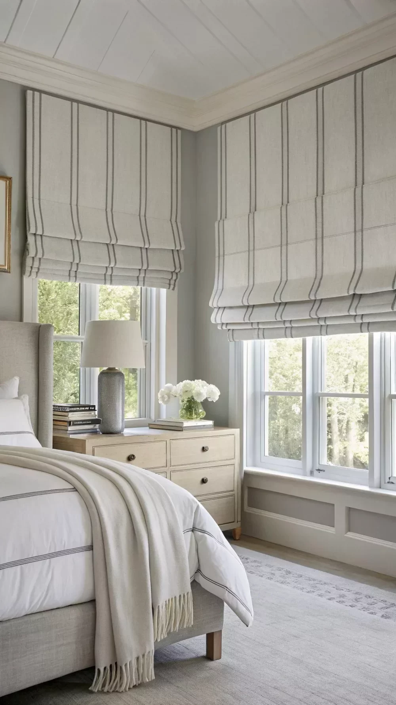
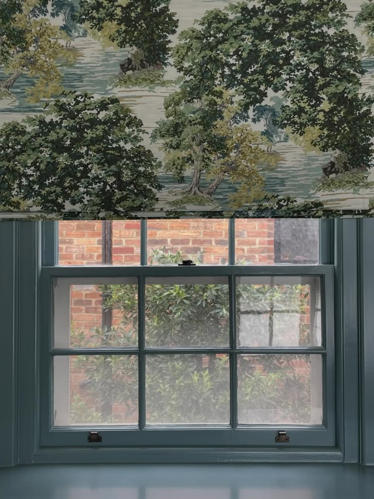
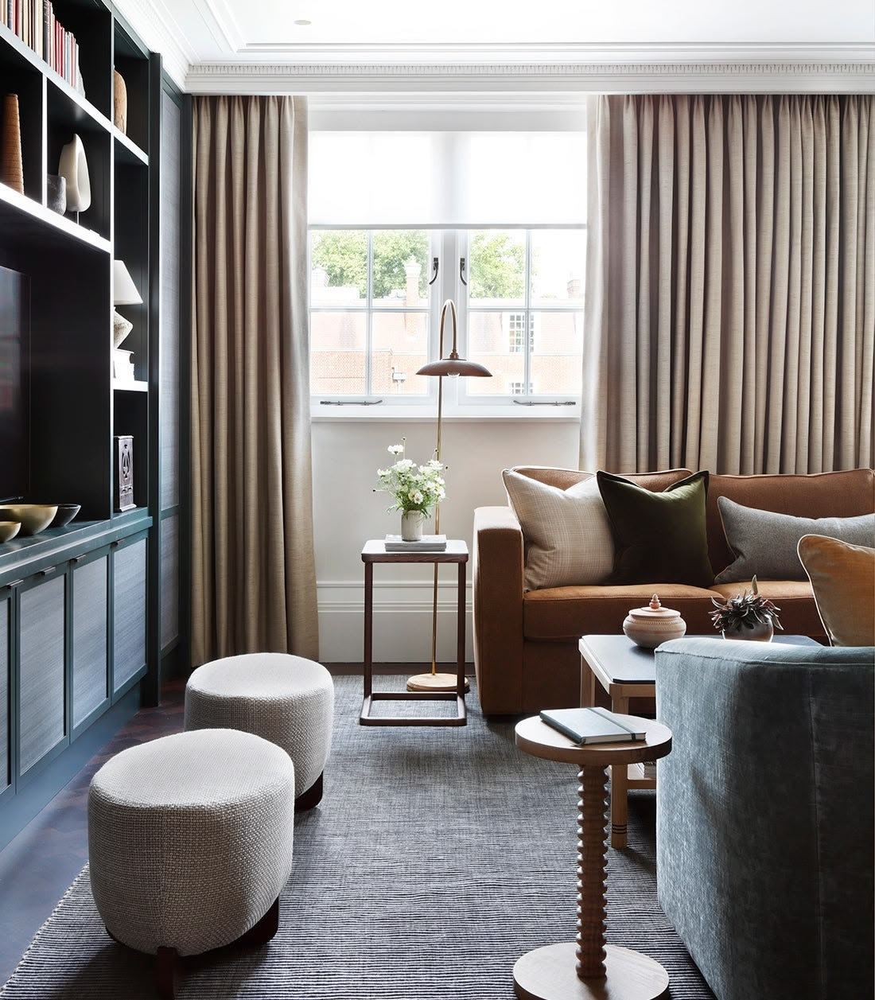
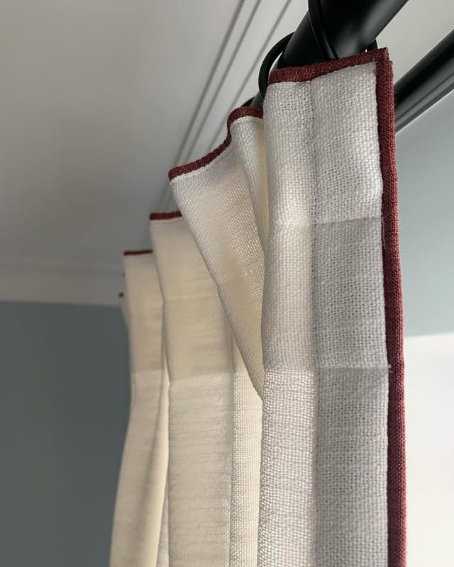
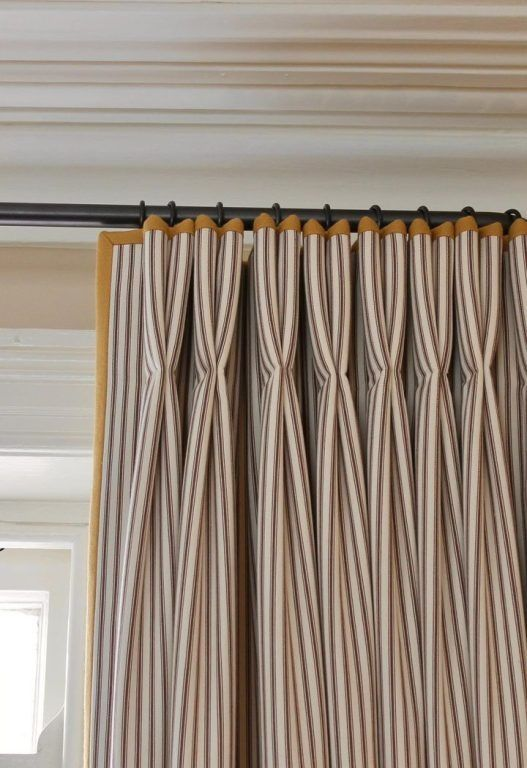
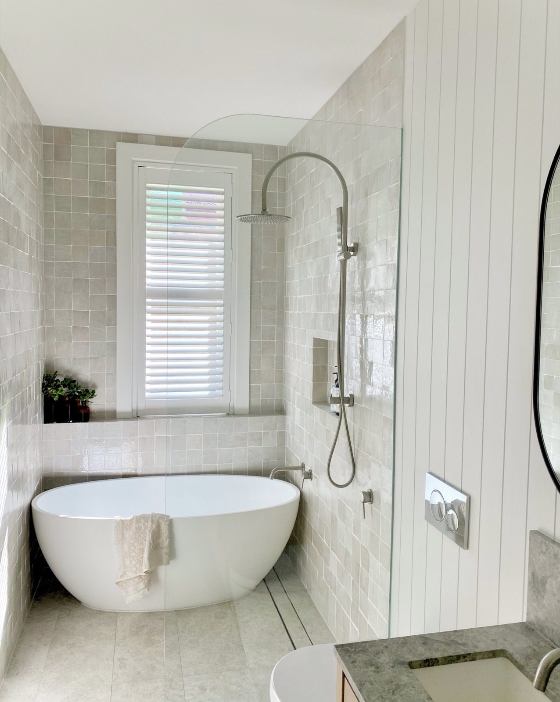
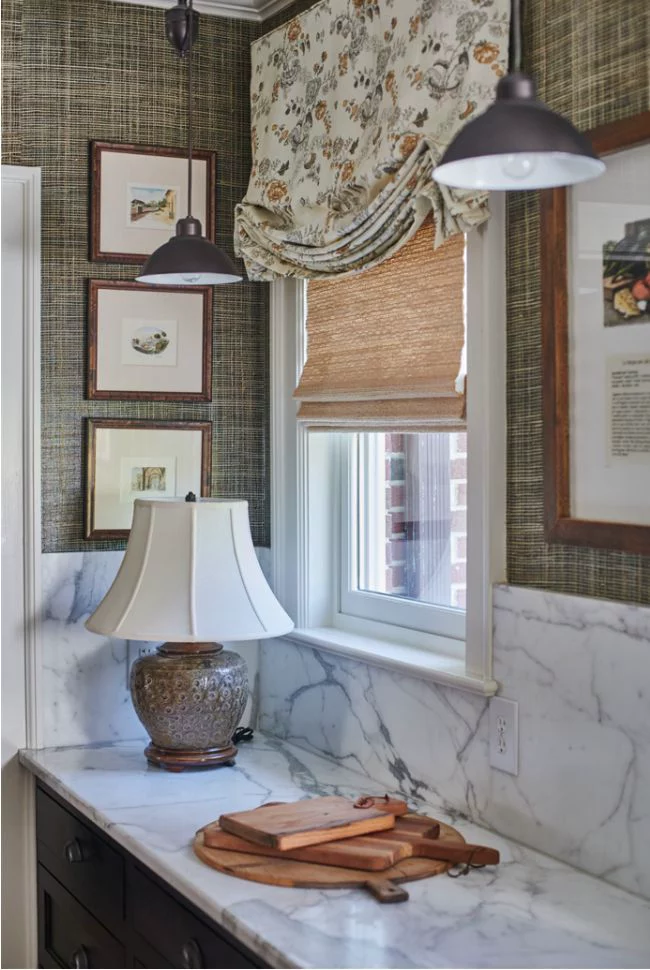
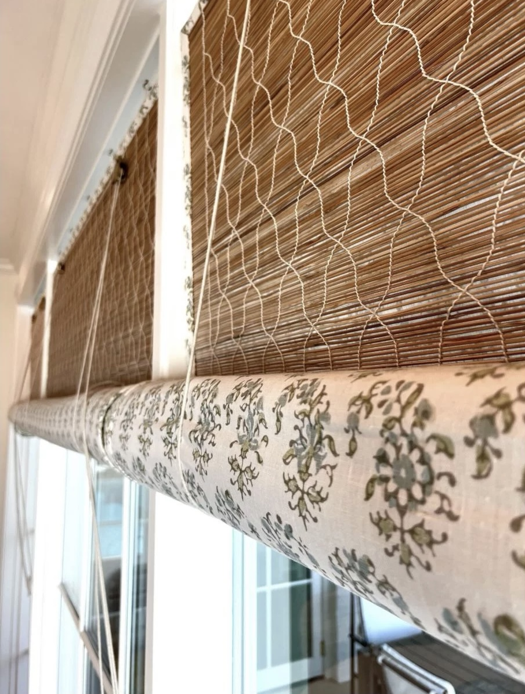
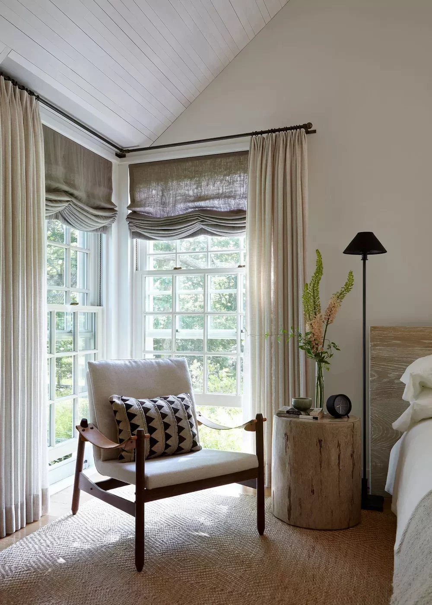
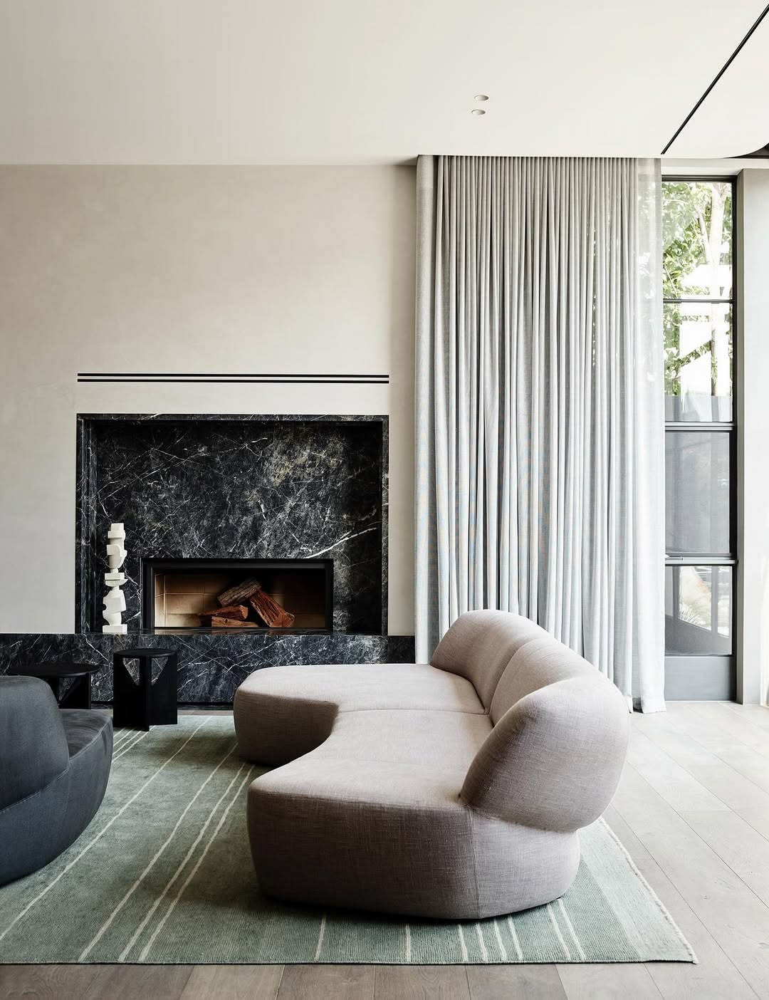

Window furnishings are one of the decisions that clients most consistently underestimate. They are also one of the decisions that, made well, have the greatest impact on how a room looks and feels, more so than a new sofa, more so than a paint colour change, and often more so than a piece of art.
The reason they tend to be underestimated is that windows are easy to overlook when a room is being put together. The furniture is chosen, the rug is sourced, the cushions are selected, and then, at the end of the process, someone asks what is happening with the windows. By that point, the budget is often tight, the decision feels complicated, and the result is usually something functional but not particularly considered.

Window coverings do more work than most people realise. They manage light, protect privacy, regulate temperature, anchor a room's proportions, and when chosen thoughtfully become one of its most considered design details. Here is how to approach the decision with clarity.
Start with function, not aesthetics
Before you fall in love with a fabric, ask yourself: what does this room actually need from its windows?
A north-facing living room flooded with afternoon sun has very different requirements from a south-facing bedroom that barely sees direct light. A bathroom needs privacy; a study needs glare control; a kitchen may need something serviceable. The function of the covering should always come before the aesthetic, which will follow naturally from there.
Questions worth asking before you begin:
- How much light do you want to filter or block?
- Is privacy a concern at any time of day?
- Does the room face direct sun? At what time?
- Do you have young children or pets? (This affects material and mechanism choices significantly.)
- Do you want to be able to ventilate with windows open while the covering is in use?
Once you are clear on function, your options narrow in the best possible way.
Understand what each covering type does best
Sheer curtains and sheer panels are the softest choice: they diffuse light beautifully while maintaining an open, airy feel. They do not offer meaningful privacy during the day when lit from behind, so they are best layered with a blockout or used in rooms where daytime privacy is not a concern.

Sheer linen, dappled light and shadow in this large open plan living space.
Blockout roller blinds are the workhorses of window coverings. Simple, clean, and endlessly functional. They provide full light control and privacy when closed, and disappear neatly into their housing when open. They suit contemporary and transitional homes, and work well in bedrooms and media rooms, particularly with a sheer overlay to soften the look.
Roman blinds bring both a warmth and softness that roller blinds cannot. When raised, they fold into structured horizontal pleats; when lowered, they offer a flat, tailored panel. The fabric choice here is everything: a linen roman reads relaxed and textural and can create a soft light-diffusing effect much the same as sheer curtains, while a patterned fabric can become a lovely focal point for a room.

Roman blinds in a striped linen, raised to show the structured horizontal fold detail.

A patterned roman in a kitchen setting, a printed fabric can become a focal point for the room.
Curtains and drapes are the most architecturally significant covering. Floor-to-ceiling curtains, hung high and wide to extend beyond the window frame, elongate walls, amplify natural light when open, and add a layer of luxury no other covering quite achieves. They work in almost every room, from formal spaces to relaxed bedrooms. The key is in the execution: fabric weight, heading style, stack-back width, and hem treatment are all important.

Curtains hung at ceiling height with a generous stack-back, the standard for proportion in any room 2.7m or above.
The heading
The heading is the way the curtain is gathered or attached to the track, and it has a significant impact on the overall look and formality of the treatment.
Wave or S-fold is the most popular choice in contemporary Australian interiors, and for good reason. The fabric hangs in consistent, evenly spaced curves, effortless and modern. It requires a specific track and a fabric with the right weight to hold the wave, but when it works, it is exceptionally clean.
Pinch pleat - double or triple - is a classic tailored heading. The fabric is gathered into neat, structured pleats at regular intervals, creating a more formal, traditional silhouette. It suits period homes and more decorative interiors well, and works beautifully in heavier fabrics.
Pencil pleat creates a tighter, more densely gathered look and is one of the most versatile headings, suiting both traditional and relaxed styles depending on the fabric chosen. It is also one of the most forgiving in terms of fabric quantity, as the gathering ratio is typically lower than pinch pleat.
Eyelet headings thread the rod directly through large metal rings punched into the fabric, creating a casual, slightly structured fold. They are a practical and cost-effective option for a relaxed family home, though they do not stack back as neatly as track-based headings.
As a general principle: the more relaxed the interior, the more relaxed the heading. Wave and pencil pleat are the most versatile starting points for most homes.

Wave/S-fold, ceiling-fixed track, grey linen.

Pinch pleat, linen with contrast trim detail.

Pencil pleat, linen, dark rod.

Pinch pleat, ticking fabric, decorative rod.
Plantation shutters offer a classic, structured look with excellent control over light and ventilation. They are particularly well suited to bathrooms and spaces where you want to diffuse a view, and have the advantage of being extremely durable. They do not, however, soften a room in the way fabric coverings can, and they suit certain architectural styles more than others.

Plantation shutters in a bedroom bay window.

Plantation shutters in a bathroom setting, moisture-resistant and refined.
Woven bamboo blinds introduce natural texture and warmth, and are definitely making a comeback having been popular in the 1970s. They filter rather than block light, casting a soft dappled quality into a room that feels organic and textural. Beautiful in living rooms and casual dining spaces, though not always suitable when full privacy or complete blockout is needed.

Woven bamboo layered under a relaxed roman, light management in a kitchen setting.

Detail of woven bamboo blind with fabric trim, a natural, organic quality that filters rather than blocks light.
Consider scale and proportion carefully
One of the most common mistakes is undersized window coverings. A blind or curtain that sits precisely within the window frame will make the window look smaller, the ceiling feel lower, and the room feel less resolved.
As a general rule:
- Hang curtain rods 15–20cm above the window frame, ideally close to the ceiling in rooms with ceiling heights of 2.7m or above.
- Extend the rod 15–20cm beyond the frame on each side, so the stack-back of the curtain falls clear of the glass when open.
- Curtains should skim or lightly brush the floor. Puddling is a considered stylistic choice, not a mistake, but requires intention and the right fabric weight.
The same principle applies to blinds: a roller or roman blind mounted outside the frame (known as face-fit) reads as more generous and intentional than one sitting inside it.

Think about layering
Some of the most beautiful window treatments work because they layer two coverings, typically a sheer or translucent blind closest to the glass, and a heavier blockout curtain in front. This approach gives you enormous flexibility: you can filter light during the day, draw the curtain for evening privacy, or close the blockout for a sleep-darkened bedroom.
Layering is also one of the most effective ways to add visual depth to a room without introducing additional furniture or art. Done well, it looks effortless, which of course means it requires a great deal of thought to get right.

A layered treatment: a roman blind closest to the glass, with a sheer curtain in front, light filtering during the day, privacy in the evening.
Fabric and material
For fabric-based coverings, weight and opacity matter more than pattern or colour in the first instance. A gorgeous printed linen that is too lightweight will look insubstantial. A beautiful colour that lets in too much or too little light will frustrate you daily.
A few principles to carry with you:
- Linen and linen-look fabrics drape beautifully and age well. They work across almost every interior style; they do, however, wrinkle and move with humidity, which some clients love and others find difficult to live with.
- Velvet and heavier wovens add warmth and acoustic softness, particularly valuable in hard-surfaced contemporary homes where sound bounces.
- Performance fabrics (UV-rated, moisture-resistant, wipeable) are worth considering in kitchens, bathrooms, and high-humidity spaces, as well as in homes with direct sun exposure where fading is a concern.
- Patterned fabrics should be considered in the context of the whole room, not just at the window. Scale matters, and a large repeat that looks striking on a sample board can feel overwhelming when repeated across six metres of curtain.
Hardware is not an afterthought
The rod, track, bracket, and finial are the architecture of the window covering. They are often the last decision made and the one most likely to be underbudgeted, and it shows.
Slim, ceiling-fixed tracks in a finish that coordinates with your hardware are the cleanest solution for most contemporary homes. Decorative rods with finials suit more traditional or relaxed interiors. Recessed pelmets - a concealed track built into the ceiling or bulkhead - are the most considered and expensive option, but create an exceptionally refined result.
Motorisation is worth serious consideration if you have high windows, skylights, or simply value the ease of automated control, particularly in bedrooms and living rooms where you operate coverings multiple times a day.
A considered decision

Window coverings are one of the last elements chosen in most design projects, but they deserve to be one of the first conversations. They affect how every other element in the room looks: the depth of a wall colour, the quality of light on a material, the sense of height and volume in a space.
If you are navigating this decision and finding it overwhelming, that is entirely normal. There are a great number of variables, and the options available, even from a single supplier, can run into the hundreds. This is the kind of detail where working with a designer early can save you significant time, money, and the frustration of getting it wrong.

Ready to begin?
Window covering consultation is available as part of our design services, or as a standalone Finishing Layer add-on. If you would like to talk through your home, we would love to hear from you.
Book a Consultation